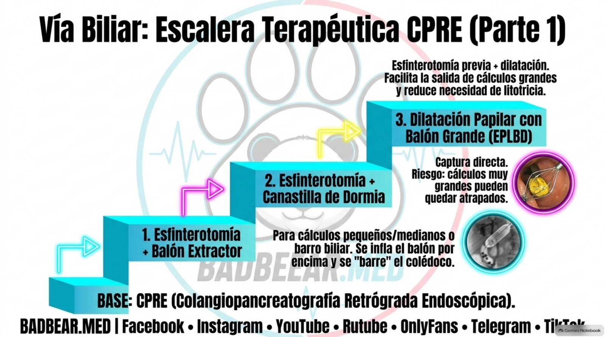
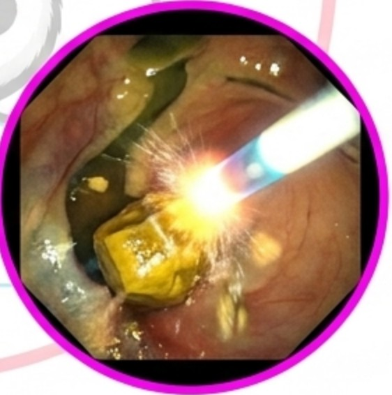
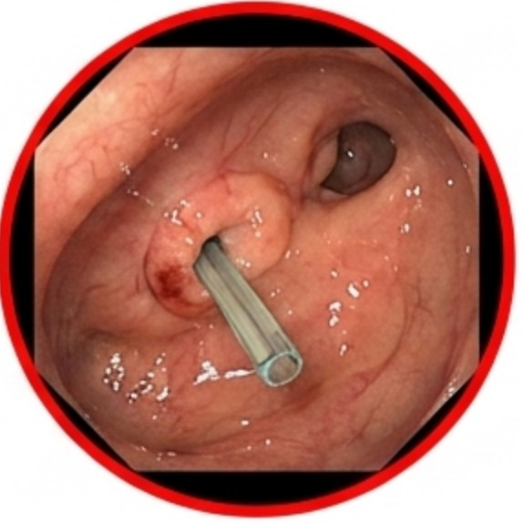

Coledocolitiasis: métodos endoscópicos de extracción y manejo
Balón, Dormia, dilatación, litotricia, rescate y drenaje temporal.
Fuentes rápidas del capítulo
Acceso directo a guías, artículos y revisiones internacionales utilizadas en este tema.
La coledocolitiasis es la presencia de cálculos en la vía biliar principal. Pueden migrar desde la vesícula o formarse dentro del conducto en situaciones determinadas. La obstrucción puede ocasionar ictericia, colangitis o pancreatitis. Para responder cuántas formas endoscópicas existen, conviene separar extracción, apertura papilar, fragmentación y drenaje: son funciones distintas que a menudo se combinan en una misma CPRE. [1,2]
1. CPRE: una plataforma terapéutica, no solo una fotografía
La colangiopancreatografía retrógrada endoscópica introduce un duodenoscopio hasta la papila, permite canular la vía biliar, inyectar contraste y tratar su contenido. El duodenoscopio no entra por sí mismo en todo el colédoco; guía catéteres y dispositivos. La colangioscopia añade visión directa dentro del conducto mediante equipos específicos.
La CPRE es fundamentalmente terapéutica y tiene riesgos. Si la probabilidad de cálculo no es suficientemente alta, suele preferirse confirmar con ecoendoscopia o colangiorresonancia, según contexto, antes de exponer a una persona a una CPRE meramente diagnóstica. Ecografía abdominal y perfil hepático son parte de la evaluación inicial. [1,2]
2. Qué determina si un cálculo será difícil
Tamaño, número, forma, impactación, estrechez distal, diámetro del conducto, angulación y anatomía alterada influyen en la extracción. Un cálculo moderado puede ser difícil si el colédoco distal es estrecho; uno grande puede extraerse tras ampliar de manera segura una papila adecuada. La relación cálculo/conducto importa más que un diámetro aislado.
Cálculos intrahepáticos, encima de estenosis o en conductos tortuosos pueden requerir procedimientos avanzados y sesiones múltiples. Una cirugía previa con reconstrucción digestiva cambia el acceso. La estrategia debe valorar estado clínico y recursos: si existe sepsis, descomprimir puede ser prioritario sobre intentar una extracción prolongada.
3. Lista organizada: qué hace cada método
| Grupo | Técnica | Función principal |
|---|---|---|
| Extracción directa | Balón extractor | Barre cálculos y barro hacia duodeno. |
| Extracción directa | Canastilla, habitualmente tipo Dormia | Captura y retira el cálculo. |
| Apertura de salida | Esfinterotomía endoscópica | Incide el esfínter para facilitar salida. |
| Apertura de salida | Dilatación papilar con balón, pequeño en casos seleccionados | Amplía el orificio con una estrategia específica y riesgos propios. |
| Apertura para cálculos grandes | Esfinterotomía limitada más dilatación con balón grande, EPLBD | Facilita extracción de cálculos grandes en anatomía apropiada. |
| Fragmentación | Litotricia mecánica | Tritura mediante canastilla y sistema mecánico. |
| Fragmentación intraductal | Litotricia electrohidráulica, EHL | Fragmenta con pulsos generados por descarga, habitualmente bajo colangioscopia. |
| Fragmentación intraductal | Litotricia láser | Fragmenta bajo visión directa con energía láser. |
| Drenaje temporal | Prótesis biliar o drenaje nasobiliar según caso | Descomprime cuando no se logra o no conviene completar extracción. |
Respuesta para la exposición: hay dos instrumentos clásicos de extracción directa —balón y canastilla— y tres modalidades principales de fragmentación endoscópica —mecánica, electrohidráulica y láser—, apoyadas por técnicas de apertura papilar. No existe un número universal de «ocho formas independientes»: las combinaciones y el drenaje no deben contarse como si todas extrajeran un cálculo por el mismo mecanismo.
4. Balón extractor: barrer desde arriba del cálculo
Se pasa un balón por encima del cálculo, se infla con un diámetro apropiado y se retira hacia la papila. Funciona bien con cálculos pequeños o medianos, fragmentos y barro, cuando el trayecto y la salida son adecuados. El balón extractor no es el mismo dispositivo ni cumple la misma función que el balón usado para dilatar la papila.
Si el cálculo no sale, tirar con fuerza no soluciona una desproporción entre cálculo y conducto. Se reevalúa salida, impactación y necesidad de fragmentar. Tras el barrido se busca confirmar limpieza con técnicas apropiadas, habitualmente colangiografía de oclusión y, en casos seleccionados, evaluación adicional. Un contraste sin defectos debe interpretarse según calidad del estudio.
5. Canastilla Dormia: capturar no es siempre triturar
La canastilla se abre alrededor del cálculo, lo captura y permite retirarlo. Su elección depende de tamaño y anatomía. Una canastilla de extracción no equivale automáticamente a un litotriptor mecánico: el dispositivo debe tener la capacidad prevista para la técnica.
Puede ocurrir impactación de la canastilla con el cálculo atrapado. El equipo necesita una estrategia de rescate, que puede incluir litotricia mecánica de emergencia u otras técnicas avanzadas. Debe evitarse capturar un cálculo muy grande sin haber valorado si puede atravesar la salida o fragmentarse de manera segura.
6. Esfinterotomía y dilatación papilar
La esfinterotomía facilita la salida mediante una incisión controlada. Sus riesgos incluyen sangrado y perforación, además de los riesgos generales de CPRE. La longitud de incisión y necesidad de combinarla con dilatación se adaptan a anatomía, anticoagulación y dificultad.
Para cálculos grandes, una estrategia recomendada en casos apropiados es esfinterotomía limitada más dilatación papilar con balón grande. El balón no debe superar de forma imprudente el diámetro del conducto distal y se evita esta dilatación frente a una estenosis distal que aumente el riesgo de perforación. Inflar hasta romper resistencia no es una técnica aceptable. [1,2]
La dilatación con balón pequeño sin esfinterotomía tiene indicaciones seleccionadas y una relación diferente con pancreatitis y sangrado. No se presenta como reemplazo universal de la esfinterotomía ni como la misma técnica que EPLBD.

7. Litotricia mecánica
Una canastilla diseñada para litotricia rodea el cálculo y un sistema de tracción lo comprime hasta fragmentarlo. Después se retiran los fragmentos con balón o canastilla. Puede ser útil cuando la extracción convencional no logra superar la salida, pero falla si el cálculo no puede capturarse, está impactado o su anatomía impide aplicar la fuerza adecuadamente.
No consiste en presionar la pared del colédoco ni en romper un cálculo a ciegas con instrumentos improvisados. La compatibilidad del equipo, la visualización y el conocimiento de rescate son parte de la seguridad.
8. EHL y láser bajo colangioscopia
La electrohidráulica genera pulsos de presión a partir de una descarga en un medio líquido. La sonda se dirige hacia el cálculo con visión endoscópica, evitando la pared. La litotricia láser utiliza energía para fragmentación también dirigida. Ambas pueden resolver cálculos difíciles, especialmente cuando los métodos convencionales fallan o cuando la anatomía favorece una intervención bajo visión directa.
La elección depende de disponibilidad, experiencia y características del caso. No hay que afirmar que todo cálculo difícil necesita láser ni que EHL y láser sean procedimientos libres de lesión. La fragmentación tampoco basta: hay que extraer fragmentos y confirmar drenaje y limpieza. [1,2]

9. Prótesis temporal: puente, no extracción definitiva
Si no se logra retirar el cálculo o el paciente no tolera un procedimiento prolongado, una prótesis biliar puede descomprimir el conducto. Con el tiempo pueden reducirse tamaño y consistencia de algunos cálculos, pero eso no equivale a garantizar eliminación. Debe existir un plan explícito de retirada, recambio y nueva sesión, con plazo individualizado.
Una prótesis olvidada puede obstruirse y favorecer colangitis. La mejoría de ictericia después de colocarla no demuestra que el conducto esté libre. El drenaje nasobiliar es otra herramienta en situaciones seleccionadas; permite acceso externo y tiene consideraciones de comodidad y manejo.

10. Rescate y anatomía modificada
En reconstrucciones digestivas puede necesitarse enteroscopia asistida, acceso combinado o rendezvous para alcanzar o canular la vía biliar. Son soluciones al acceso, no nuevas formas de triturar un cálculo. Drenaje guiado por ecoendoscopia y vías percutáneas o quirúrgicas se consideran según experiencia y fracaso de otras estrategias.
La litotricia extracorpórea por ondas de choque puede utilizarse excepcionalmente junto con extracción posterior, pero no es una técnica intraductal endoscópica. La exploración laparoscópica del colédoco es una alternativa quirúrgica, no una CPRE con otro nombre.
11. Complicaciones, prevención y tratamiento después de la CPRE
Pancreatitis, sangrado, perforación, colangitis y eventos de sedación son riesgos relevantes. Las estrategias preventivas incluyen técnica cuidadosa, medidas farmacológicas y prótesis pancreática en pacientes seleccionados conforme a guías y contraindicaciones. Antibióticos son esenciales cuando existe colangitis; la profilaxis no se da automáticamente a toda CPRE si se prevé drenaje completo.
En colangitis con deterioro, drenaje oportuno y soporte son prioritarios. Extraer todos los cálculos en la misma sesión puede ser apropiado si el paciente lo permite, pero prolongar peligrosamente el procedimiento no es un objetivo en sí mismo. Después de resolver cálculos migrados desde vesícula, se considera colecistectomía temprana en pacientes aptos para reducir recurrencia; ESGE recomienda realizarla dentro de dos semanas tras CPRE cuando sea apropiado. [2]
Repaso final · BADBEAR.MED FIJA:
- CPRE se reserva principalmente para tratar; ecoendoscopia y colangiorresonancia ayudan a confirmar en probabilidad intermedia.
- Dificultad depende de cálculo, conducto, papila y anatomía, no solo de milímetros.
- Diferenciar balón extractor de balón de dilatación.
- Mecánica, EHL y láser fragmentan; después hay que retirar fragmentos.
- Una prótesis temporal requiere un plan de seguimiento y retirada o recambio.
- Drenar una colangitis puede ser más urgente que completar una extracción compleja.
Bibliografía y material de apoyo
- Buxbaum JL, et al. ASGE guideline on the role of endoscopy in the evaluation and management of choledocholithiasis. Gastrointest Endosc. 2019;89:1075–1105.e15. DOI 10.1016/j.gie.2018.10.001.
- Manes G, et al. Endoscopic management of common bile duct stones: ESGE guideline. Endoscopy. 2019;51:472–491. Guía oficial.
- Material aportado a BADBEAR.MED, páginas 10–11. PDF aportado.
Material de estudio elaborado para la rotación. La atención clínica requiere valoración individual y protocolos del equipo tratante. Las imágenes del material aportado se utilizan como apoyo docente; no sustituyen un estudio clínico completo.